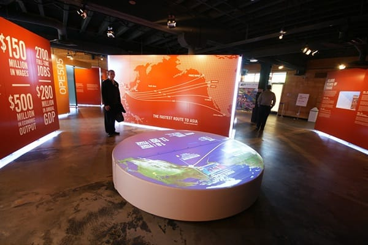
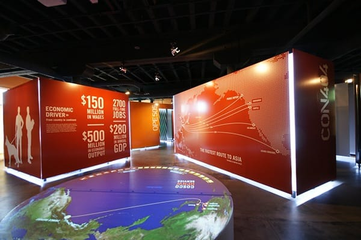

Trade Route Simulator was made for the Port of Prince Rupert Interpretive Centre.
I was subcontracted by
Waddell and Conder
and
Eos Lightmedia
to produce a motion detection application that would determine when audience held their hands over virtual buttons on a map,
and trigger specific video clips related to each button.
For the installation, I used a Microsoft Kinect to do blob detection in a specific height range,
with a couple of custom dynamic image rendering techniques to crop the visible area in a polygon.
From there, I set a series of timeout counters to test for false positives, and then trigger a UDP server
that messaged the video player application to play the appropriate content.
The control software was programmed entirely in
Processing
and used the
Blob Detection
and
Simple OpenNI
libraries.

